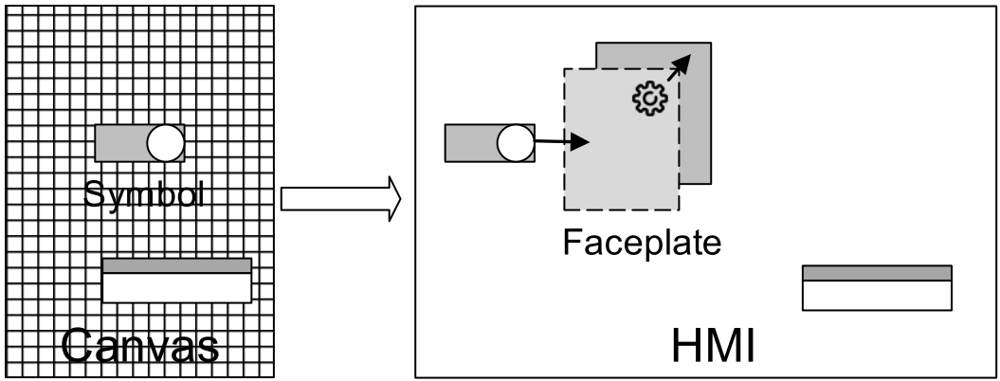
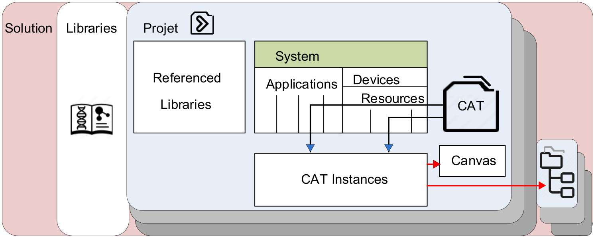

Adapter: a bilateral conduit carrying multiple signals between 2 Function Blocks.
Application:
a workspace where we drag Function Blocks out from the Solution explorer to build a network; its editor icon features a pyramid
a kind of CAT that includes Function Blocks, other CATs, ... as opposed to the Hardware kind whose CATsinclude communication parameters and links to IOs.
Build: the Build icon starts a parser that analyses the syntax of the code underlying the objects. The results show in the Message log pad.
CAT: a generic object that incudes both logic and graphic items; it provides the interface between the calculations and the user (HMI, parameters). The instances are defined from a library or from the prototype ("CAT"). Node symbol: valve |><|, except if it is a SubApp (pyramid)
CAT instance: a unique object derived from a CAT; it can be located in (assigned to) an application/layer or a resource, and also nested in (assigned to) a hierarchical view (this adds a ● mark before the name in the Solution explorer).
Canvas: the container of symbols, alarm editor and controls meant to build HMI:

Compiling: creating xml files, binary files, dll’s before deployment.
Device: control unit which can include 0, 1 or more resources together with process interfaces and communication interfaces.
Faceplate: elements that do not have to be continuously visible on the HMI (adjustments, trend view, ...) , but on demand (prefix: fp).
Hierarchy view: a custom representation of the plant breakdown; it can be based on ISA standards featuring areas, units, ... An area usually defines a domain of responsibility for alarms. You can create several views by Solution.
Logical Device: representation of controllers, variators, PC, server, ...
Process view: a built-in hierarchical view that must reflect the topological plant breakdown by folders and that includes the assets assigned to them (CAT instances and possibly SubCATs); so populated, it represents a plant model; it is attached to the current solution which can feature several process views.
Project: a collection of items (Libraries, Applications, CATs, Composite Function Blocks, Function Blocks, graphics, ...) used to model a process or a facility. Symbol in the explorer: .
Resource of a physical device: one of its processing units; out-of-the box resource: EcoRT_0, a functional unit contained in a device that has independent control of its operation.
Solution: the comprehensive set of files geared towards automating a process or a facility: it can be used as a name space for Function Blocks & CATs. Extension of the archive: sln. Breakdown:

Subapp: a CAT with extended capabilities (communication, parametrization, mapping of components to several resources). Function blocks within a Subapp function block also can run distributed to different resources.
Symbol: graphical base of a faceplate (prefix: s).
System: Applications + Devices. Its top icon features a double arrow.